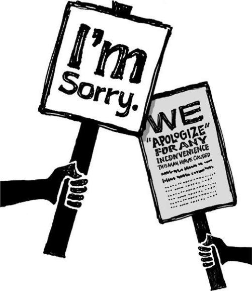

{% include JB/setup %}
{% raw %}
<div>

<h2 id="filepos225088" class="calibre19"><span class="calibre2"><a class="calibre13"></a><strong class="calibre14">Speed changes everything</strong></span></h2><div class="calibre4"></div>
<p class="calibre7">"Your call is very important to us. We appreciate your patience. The average hold time right now is sixteen minutes." Give me a fucking break.</p>
<p class="calibre17">Getting back to people quickly is probably the most important thing you can do when it comes to customer service. It's amazing how much that can defuse a bad situation and turn it into a good one.</p>
<p class="calibre17">Have you ever sent an e-mail and it took days or weeks for the company to get back to you? How did it make you feel? These days, that's what people have come to expect. They're used to being put on hold. They're used to platitudes about "caring" that aren't backed up.</p>
<p class="calibre17">That's why so many support queries start off with an antagonistic tone. Some people may even make threats or call you names. Don't take it personally. They think that's the only way to be heard. They're only trying to be a squeaky wheel in hopes it'll get them a little grease.</p>
<p class="calibre17">Once you answer quickly, they shift 180 degrees. They light up. They become extra polite. Often they thank you profusely.</p>
<p class="calibre17">It's especially true if you offer a personal response. Customers are so used to canned answers, you can <a class="calibre16"></a>really differentiate yourself by answering thoughtfully and showing that you're listening. And even if you don't have a perfect answer, say something. "Let me do some research and get back to you" can work wonders.</p>
<p class="calibre3"><a class="calibre16"></a></p><div class="calibre4"></div>
</div>

{% endraw %}

